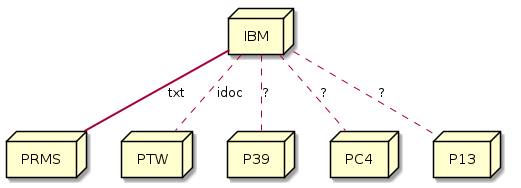
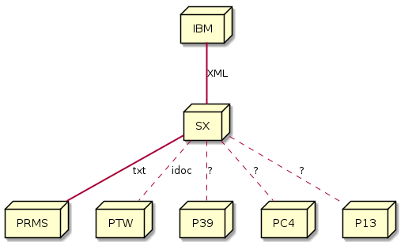
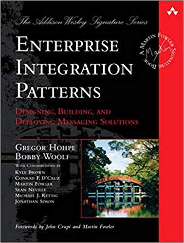
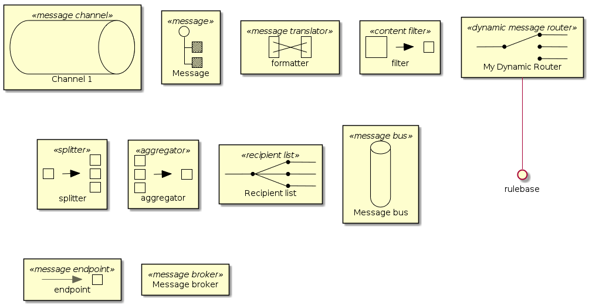
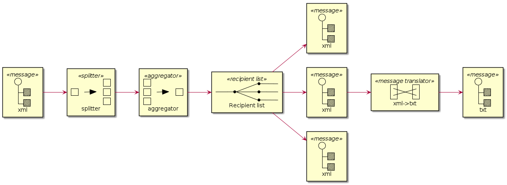
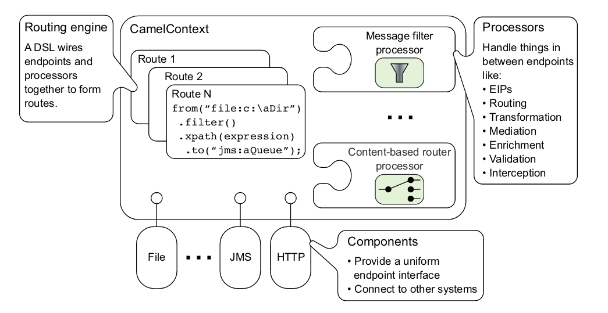
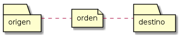

Created: 2020-02-14 vie 07:00

Limitaciones
| Información | XML | TXT |
| detalles de orden | sí | |
| información de usuario | sí | |
| información de pago | sí | sí |
| dirección de facturación | sí | sí |
| descuentos de orden | sí | |
| productos | sí | sí |
| descuentos de producto | sí | sí |
| método de envío | sí | |
| descuentos de envío | sí |




Framework que te permite definir tus rutas de integración, qué mensajes aceptar, cómo procesarlos y enviar esos mensajes a otros destinos.
Camel ofrece abstracciones de alto nivel (EIPs) que te permiten interactuar con varios sistemas con la misma API sin importar el protocolo o el tipo de datos que usen.

Las órdenes de un ecommerce llegan en una carpeta compartida, para que PRMS las procese. Los archivos deben moverse de una carpeta a otra cada 2 minutos.

<orden>
<cliente>54321</cliente>
<id>1235</id>
<total>500</total>
<productos>
<producto>
<part>123456</part>
<qty>1</qty>
<price>350</price>
<line>01</line>
</producto>
<producto line="02">
<part>654321</part>
<qty>1</qty>
<price>150</price>
<line>02</line>
</producto>
</productos>
</orden>
mvn archetype:generate \ -DarchetypeGroupId=org.apache.camel.archetypes \ -DarchetypeArtifactId=camel-archetype-spring \ -DarchetypeVersion=2.16.5 \ -DgroupId=com.bosch \ -DartifactId=broker